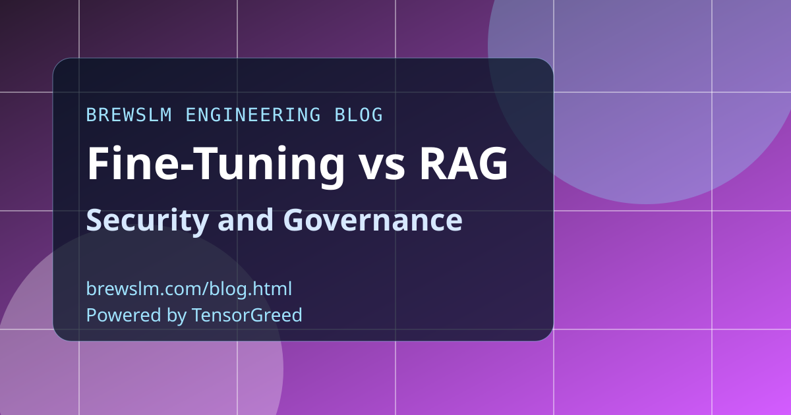

Map data residency and retention exposure
Fine-tuning pipelines centralize sensitive data during adaptation phases, while RAG pipelines distribute exposure across indexes and retrieval layers. Both can be secure, but controls must match data flow shape. Start with data lineage before selecting controls.
Design least-privilege access by layer
Model registries, retrieval stores, and runtime endpoints should have separate permission boundaries. Avoid broad shared credentials across training and serving planes. Layered access reduces blast radius during operational mistakes.
Auditability requirements differ by architecture
RAG requires retrieval traceability and source provenance logging. Fine-tuning requires dataset version lineage and model promotion evidence. Governance should demand proof artifacts relevant to each path, not generic checklists.
Gate promotions with policy evidence
Promotion should require explicit evidence packs: quality metrics, security checks, and change approvals. Make gate decisions machine-readable so audits are reproducible. Governance is strongest when it is operationalized in the release flow.